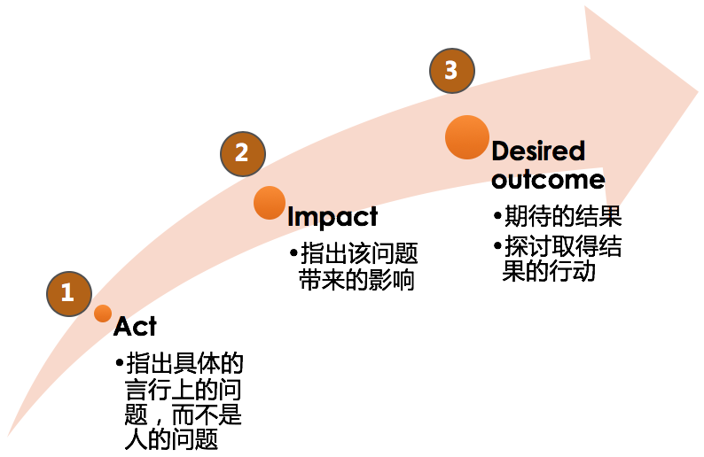

- 00 开篇词 你为什么需要学管理？.md
- 01 多年前的那些工程师都去哪了？.md
- 02 我要不要做管理呢？内心好纠结！.md
- 03 哪些人比较容易走上管理岗位？.md
- 04 我要不要转回去做技术呢？.md
- 05 作为技术管理者，我如何保持技术判断力？.md
- 06 我这样的风格能做管理吗？.md
- 07 我能做好管理吗，大家服我吗？.md
- 08 管理到底都做哪些事儿？.md
- 09 从工程师到管理者，角色都发生了哪些变化？.md
- 10 新经理常踩的坑儿有哪些？.md
- 11 我刚开始带团队，从哪里着手呢？.md
- 12 如何界定我团队是干什么的呢？.md
- 13 如何为团队设定合理的目标呢？.md
- 14 如何来规划团队的组织结构呢？.md
- 15 我都要申请哪些资源呢？.md
- 16 团队建设该从哪里入手？.md
- 17 如何提升员工的个人能力？.md
- 18 如何提升员工的工作意愿和积极性？.md
- 19 如何兼顾团队分工的稳定性和灵活性？.md
- 20 有什么方法可以有效提升团队凝聚力吗？.md
- 21 如何物色和培养核心人才？.md
- 22 如何建设团队文化，营造团队氛围？.md
- 23 如何和低绩效员工谈绩效？.md
- 24 如何让团建活动不再“收效甚微”？.md
- 25 多任务并行该如何应对？.md
- 26 如何确保项目的有效执行？.md
- 27 如何让流程机制得到有效的执行？.md
- 28 管理沟通那些事儿.md
- 29 沟通经常鸡同鸭讲，说不到一块怎么办？.md
- 30 如何掌控自己的情绪，以及如何管理情绪化的员工？.md
- 31 我各方面做得都很好，就是做不好向上沟通.md
- 32 横向沟通和非职权影响力.md
- 33 向下沟通的常见实例解析.md
- 34 管理沟通上有哪些常见的坑儿呢？.md
- 35 从空降谈管理方法论的积累.md
- 36 走出自己的管理之路.md
33 向下沟通的常见实例解析
谈到向下沟通，技术管理者们纷纷表示有话要说，也许此时的你，就正带着一堆向下沟通的问题在读这篇文章。
只要是带团队，在日常的管理工作中，我们就离不开向下沟通这个话题。技术管理者最挑战的管理主题中，向下沟通也名列前茅，仅次于向上沟通、员工激励和团队凝聚力建设。你是否会好奇，显然我们和下级的沟通比和上级更频繁，为什么挑战反而比向上沟通要小呢？如果你还记得上一篇文章中我们探讨过的影响力问题，就很容易理解了：向下沟通，我们除了可以依靠非职权影响力之外，职权影响力也在发挥作用，因此，很多向下沟通的挑战就被职权影响力化解了。
但是由于向下沟通场景的基数太大，各种各样的下级带来的各种各样的问题也就涌现出来了。那么，向下沟通的问题有哪些特点呢？我在归纳了一百多个案例之后发现，如下四类问题特别集中。
第一类，也是反馈最多的一类，是询问“如何批评员工”。这类常见的说法有：
“A 的项目总是 delay，每次沟通她总是态度积极，表示一定改正，但行动上却还是老样子。我该怎么批评她呢？”
“B 的工作做得很粗糙，不追求精益求精，只是做完而不是做好。我要怎么批评他，才能让他改正缺点，又不打击他的干劲儿呢？”
“C 的周报发的特别水，请假也不提前打招呼，我问她什么原因，虽然她的解释有一定道理，但是我还是想让她改掉这些问题，有什么办法吗？”
“公司实施弹性工作制，D 本来 10 点就到公司了，但发现其他人都没有来，觉得不公平，以后他就故意来晚。结果造成部门的工作时间整体推迟，但是这又很难批评他一个人，你有什么主意吗？”
“E 不以解决问题为导向，发现问题后不主动跟进解决，总是推托说这不是他的问题。我平时也会跟他说要多担当，但是没有效果。该怎么批评他，让他改正缺点呢？”
第二类，沟通不顺畅。常见的说法有：
“在沟通的时候 A 特别沉默，什么都不愿意反馈，问一句答半句，每次沟通都是草草了事，我也发愁后续怎么和她沟通。”
“和 B 总聊不到一个频道上，我聊目标，他聊困难，我聊进展，他聊原因……毫无默契可言。”
“我就从来不知道 C 在想什么，她常常口头上说的是一回事，其实内心想的是另一回事，捉摸不透，无法知道她的真实诉求。”
“D 之前经常会把做出来的成果给我看，我每次都说了‘很棒’啊，可为啥看她的反应还是情绪不高，挺闷闷不乐啊？”
第三类，和“牛人”下属之间的较量。常见的说法有：
“我们团队的 A 技术架构能力很强，独立工作能力也很好，我很难对他的发展和工作给出建议和帮助，不知道怎么带他。”
“我和团队里的架构师 B，常常在一些技术决策上发生争执，有点合作不下去了。”
“我团队的 C 成长很快，感觉他越来越不服我，我是不是得把技术捡起来了？”
第四类，不知如何应对一些“刺头”员工。常见的说法有：
“A 总是越级汇报，我非常反感，但是又拿他没办法，他特别会讨好我的上级。”
“B 总是挑活，还很固执，怎么辅导也改不了，真是头疼。”
“C 总是暗示我给他升职加薪，可是我觉得他能力还不够，怎么跟他沟通才能不打击他的积极性呢？”
“D 特别情绪化，动不动就跟人吵架，经常在会上乱怼一通，大家都不愿和他共事，可是他技术能力挺强的，怎么辅导他呢？”
怎么样，上面这四类问题，是不是你也关心呢？
不过，在正式探讨这些问题之前，我需要首先澄清一个理念：通过上面大家反馈的问题你会发现，虽然大家都认为这是一个“向下沟通”的问题，但是如果我们脱开管理逻辑，单纯去探讨如何“沟通”，就会掉入“舍本逐末”的陷阱，导致在和员工沟通的时候很苍白无力、收效甚微。
因此，我们探讨管理沟通问题的时候，需要有“管理逻辑”和“沟通方法”两个层面的视角。所谓“管理逻辑”，就是首先弄清楚这是个什么管理问题，并从管理角度来看完整的解决方案应该是什么样的，然后再来看“沟通”该如何来实施。两者不能割裂开，甚至有的管理者出现了管理逻辑和沟通思路相背离的情况，就更加不应该了。
这听上去会不会比较虚？那我们下面举例来说明一下。
例 1：很多管理者会咨询我，“如何和低绩效员工做绩效沟通？”这显然没有意识到更重要的是绩效管理本身，沟通只是绩效管理的一环而已。所以要想解决低绩效员工的绩效沟通问题，首先要从绩效管理入手，然后再来看如何实施沟通。也正是因为这个原因，我并没有把绩效沟通的话题，放在管理沟通这一章来讨论。
例 2：很多管理者会问，“员工积极性不高，如何和他沟通呢？”你不难发现，沟通效果好的话，的确可以对员工起到激励的作用，但是这整体上是一个员工激励的问题，沟通是不是最有效的手段呢？这需要我们从管理视角和沟通视角两个层面来思考。
好了，相信你已经明白我的意思了，就是不要把管理沟通问题单纯看成是沟通问题，其实很大的比重是在管理逻辑上，需要我们从“角色认知”和“管理规划”“团队建设”“任务管理”（还记得我们的“三明治”管理框架吗）的管理方法论上去思考整体解决方案。
接下来，我们就一起来分析一下常见的这些“向下沟通”的问题。
对于第一类问题，关于“如何批评员工”。
这类问题最为普遍，为什么呢？因为对于一个我们不认可的行为，第一反应就是认定“对方不应该”，于是，我们就要通过“批评”这样的手段来“纠正他的错误”。所以你会发现，批评背后的真实意图是“促其改变”。而很多管理者并没有认识到这一点，因为他们所采取的手段和真正的意图直接产生了矛盾，不但不能促使对方改变，甚至还封闭了对方改变的道路。比如，一旦违背了如下三个批评的原则，“促其改变”的效果就很难达到：
人是 OK 的原则。即，对事不对人。批评事，不要打击人，更不能给人贴标签。
具体性原则。指出具体哪里做的不好，让对方容易认同。
面向未来的原则。体现负面的暂时性和过去时，并提供改变的“出口”。
那么，具体应该怎么批评呢？在教练领域有一个 AID 批评法，大体上也遵循了上述原则，具体分为如下图中的三步：

AID 批评三步法（发展性反馈）
以上呢，是和大家探讨如何批评一个员工。但我还想问的是，在一个不符合我们期望的事件发生时，批评对方真的是我们想要的吗？
比如前面案例中的一个问题，“我团队的某个员工越过我和我的上级沟通”，那我就很想知道，你真正介意的是什么呢？如果你只是希望自己和他们两个的信息是一致的，那只要约定一个同步机制就好了，你需要批评下级员工吗？所以你看，当你意图从“你不想让员工跨级汇报”变成了“我想让我们三个人之间的信息保持同步”后，批评员工就不再是最好的选择了。
所以，当你遇到一些不符合期待的问题时，建议先从“我不要……”这种意图中走出来，问问自己“我要什么”。然后再来审视采取什么手段是最合适的，这就叫意图转换。具体可以参照下面的示意图。
意图转换流程（果见）
好了，我们要如何应对需要“批评”的员工呢？归结为一句话就是：先转换下意图看看是否需要批评，如果批评依然是最好的手段，那就要用 AID 批评法，为员工改变提供出口。
对于第二类问题，关于和下级员工沟通不顺畅。
这就需要用一些工具和技巧来辅助沟通了，我针对这些场景介绍几个工具供参考：
1、对于内向沉默的员工，可以使用下图的“积极引导四步法”，引导员工打开话匣子，主要话题不必局限于工作，跟员工建立起沟通关系和沟通通道，是首要任务。

积极引导四步法（果见）
2、对于总聊不到一个频道上的员工，可以使用我们在第 29 篇文章中介绍的“沟通层次图”，从事实、感受（判断）和意图三个层面来和对方进行频道对齐。
3、对于捉摸不透的员工，也可以使用“沟通层次图”或“3F 倾听”来分辨对方表达的内容，为了避免误会，可以做一些回放和复述，使用类似下面的话术：“你是不是这个意思？”“你看我的理解对不对？”这样就可以大幅度减少沟通偏差了。
4、对于如何给员工的表现进行反馈，我推荐使用“主动积极式反馈”，如果你感兴趣的话，可以去网上搜索一下这个工具，也很容易理解。
其实，沟通的工具很多，大多都是理解起来不难，但掌握起来并不易，如果要想达到“手中无剑、心中有剑”的境界，就更是需要长期的刻意练习。
对于第三类问题，关于如何应对“牛人”下属。
从称谓就可以看出，“牛人”下属肯定属于做事很给力的那类员工，常常是专业能力很强的技术高工和架构师。作为管理者，你如果还在和自己团队的架构师在技术上一较高下，甚至是“你死我活”地争执，那么这就不是一个沟通问题，而是一个典型的管理问题，确切地说，是管理角色认知问题。
你作为管理者，就要很好地认清自己的角色，认识到自己是团队的带路人和负责人，而不是要和架构师站在一个层次上去争高低输赢的。在这方面，我们得向汉高祖刘邦学习一下，他是靠什么把各个方面的“牛人”拢到一起的呢？关于如何和“牛人”技术高工相处，我的心得如下：

高工管理四个要点（果见）
从这四个方面来达成和“牛人”员工的良好协同。
对于第四类问题，关于如何应对一些“刺头”员工。
首先我们得澄清一下，什么叫“刺头”员工呢？我们约定一下：那些需要你付出非常多的时间和精力去管理的员工，叫做“刺头”，也就是管理成本很高的员工。这么一说，相信你团队中某些员工就会浮现在你的眼前了吧？你通常是怎么应对的呢？
既然我们是从管理成本角度来看待这类员工，那我们就需要首先从投入产出比来评估一下，这个员工是否值得你耗费那么多管理成本。毕竟你作为一个团队的 leader，是需要对整个团队的发展和业绩负责的，你的角色需要你把精力投入到那些对团队和业绩最为有效的地方，这无关情感和道德。
那么，如何判断值得不值得呢？可以从团队和做事两个方面来看，具体参考下面的“刺头”员工价值评估四象限：

“刺头”员工价值评估四象限（果见）
评价出来之后，需要淘汰的，很明确；如果有需要改变的怎么办呢？关于如何促使一个人做出改变，美国学者理查德·贝克哈德的改变公式，可以给我们一些指导：
理查德·贝克哈德的改变公式
也就是说，你要改变一人，可以从他的“痛点”“痒点”出发，并和他一起制定“迈出第一步”的行动计划，从而去帮他克服掉改变的阻力。
好了，至此，向下沟通中最常见的四类问题，我都做了一个回应，相信你对向下管理这个主题会有一个整体的了解。
考虑到文章篇幅问题，我并没有把每一个工具、步骤及其背后的逻辑都展开论述。如果你对哪一部分特别感兴趣，欢迎给我留言，或者我们也可以再找机会深入探讨。
© 2019 - 2023 Liangliang Lee. Powered by Vert.x and hexo-theme-book.